引言
原文：https://mp.weixin.qq.com/s/0RWIjzcB7dWhxrokWBJkdA
大模型将成为通用人工智能的重要途径。在这个由0和1编织的数字时代，人工智能的腾飞已不是科技梦想，而是日益切实的现实。其中，大模型作为人工智能的核心力量，正以前所未有的方式重塑着我们的生活、学习和工作。无论是智能语音助手、自动驾驶汽车，还是医疗诊断系统，大模型都是幕后英雄，让这些看似不可思议的事情变为可能。
人工智能的发展历史
1. 1950s-1970s：AI的诞生和早期发展
- 1950年，图灵测试的提出，为机器智能提供了一个评估标准。
- 1956年，达特茅斯会议标志着人工智能作为一门学科的正式诞生。
- 1960年代，早期的AI研究集中在逻辑推理和问题解决上。
2. 1980s：专家系统的兴起
- 专家系统的成功应用，如MYCIN在医学诊断领域的应用。
- 机器学习算法开始发展，如决策树和早期的神经网络。
3. 1990s：机器学习的进展
- 反向传播算法的提出，极大地推动了神经网络的研究。
- 1997年，IBM的深蓝击败国际象棋世界冠军，展示了AI在策略游戏中的能力。
4. 2000s：大数据和计算能力的提升
- 互联网的普及带来了海量数据，为机器学习提供了丰富的训练素材。
- 计算能力的提升，尤其是GPU的广泛应用，加速了深度学习的发展。
5. 2010s：深度学习革命
- 2012年，AlexNet在ImageNet竞赛中的胜利，标志着深度学习在图像识别领域的突破。
- 深度学习在语音识别、自然语言处理等领域取得显著进展。
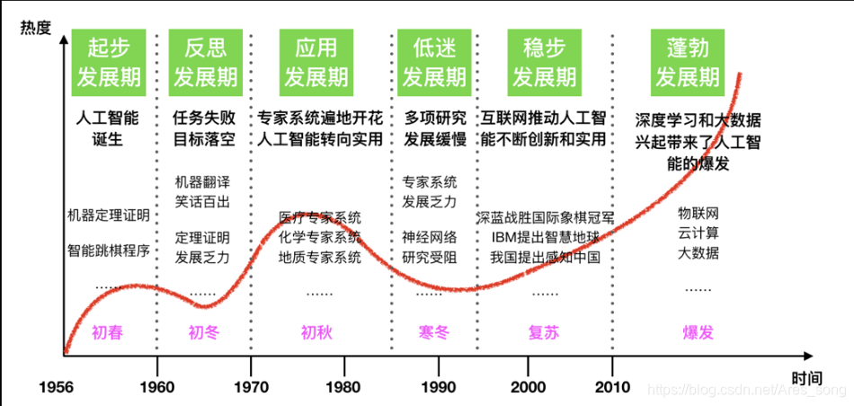
6. 2017年：Transformer和自注意力机制
- 2017年，Transformer模型的提出，引入了自注意力机制，极大地提升了模型的性能。
- Transformer模型在自然语言处理任务中取得了革命性的成果，如BERT、GPT等模型。
7. 2020s：大模型和多模态学习
- 大模型如chatGPT、Claude、Gemini、Llama、chatglm、Kimi等等都展示了强大的能力。
- 多模态学习的发展，如CLIP模型，能够理解和生成跨模态内容。
大模型的本质
大模型是能够从海量数据中学习、利用这些数据进行推理，并使用这些推理来回答用户的问题或是执行特定的任务。大模型（如ChatGPT、LLM等）在人工智能领域中被广泛应用，其核心理念和工作原理可以总结为以下几个方面：
LLM的组成 - 两个文件
大模型由以下两个关键部分构成：一个是 参数集，另一个是 执行代码。
**参数集：**这是模型的"大脑"，包含了通过训练学习到的神经网络权重。
**执行代码：**这是模型的"引擎"，包含用于运行参数集的软件代码，可以采用任何编程语言实现。
训练大模型需要对大量互联网数据进行有损压缩，是一项计算量更大的任务，通常需要一个巨大的GPU集群。
有趣的是，你只需要一台标准的计算机就可以运行像Llama-3这样的LLM并得出推论。在本地服务器上运行，因此，甚至不需要互联网连接。
LLM的神经网络究竟在“想”什么 - 预测下一个单词
大模型的核心功能之一是预测文本序列中的下一个单词：
输入一个“部分”句子，如“cat sat on a”。
利用分布在网络中的参数及其连接关系预测下一个最可能的单词，并给出概率。如“mat（97%）”
模拟了人类语言生成的方式，使得模型能够生成连贯和符合语境的句子，如生成完整的句子“cat sat on a mat”
模型根据它所获得的大量训练数据，生成“合理的延续”，即生成符合人类语言习惯的文本。
注：Transformer架构为这个神经网络提供了动力。
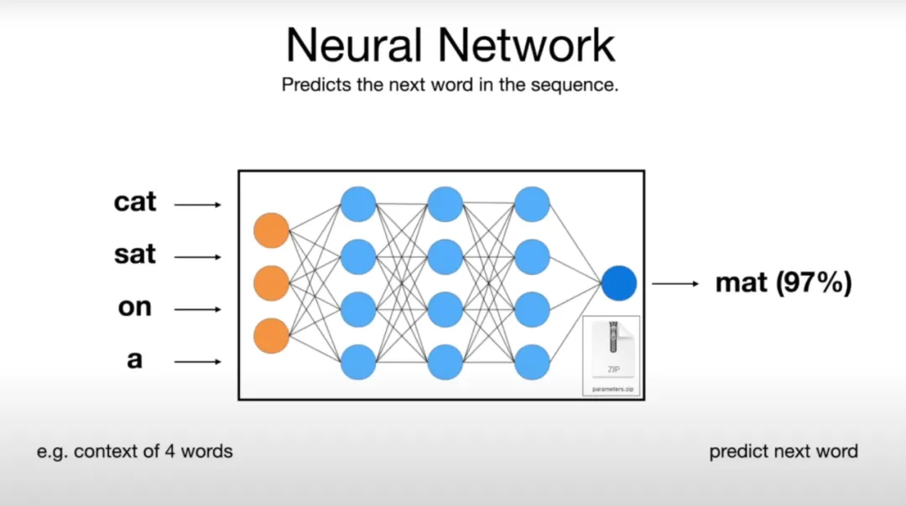
图片来源 A Busy Person’s Introduction to Large Language Models（https://www.openculture.com/2023/12/a-busy-persons-introduction-to-large-language-models-llms.html)
神经网络“真正”的工作方式仍然是个谜
尽管我们可以将数十亿个参数输入到网络中，并通过反复微调训练这些参数，从而获得更好的预测效果，但我们并不完全理解这些参数在网络中是如何准确协作的，以及为什么它们能够生成如此准确的回答。科学上，这种现象被称为涌现。
我们知道，这些参数构建并维护了某种形式的知识数据库。然而，这种数据库有时表现得既奇怪又不完美。例如，一个大型语言模型（LLM）可能会正确回答“谁是小明的母亲？”这个问题，但如果你问它“X的儿子是谁？”，它可能会回答“我不知道”。这种现象通常被称为递归诅咒。
训练大模型的步骤
预训练，训练需要对大量互联网数据进行有损压缩，输出参数文件
- 收集大量互联网文本数据。
- 准备强大的计算资源，如GPU集群。
- 执行训练，生成基本模型。
微调阶段：
- 准备高质量的训练数据，如问答对。
- 在这些数据上调整模型参数，优化性能。
- 进行评估和部署，确保模型达到预期效果。
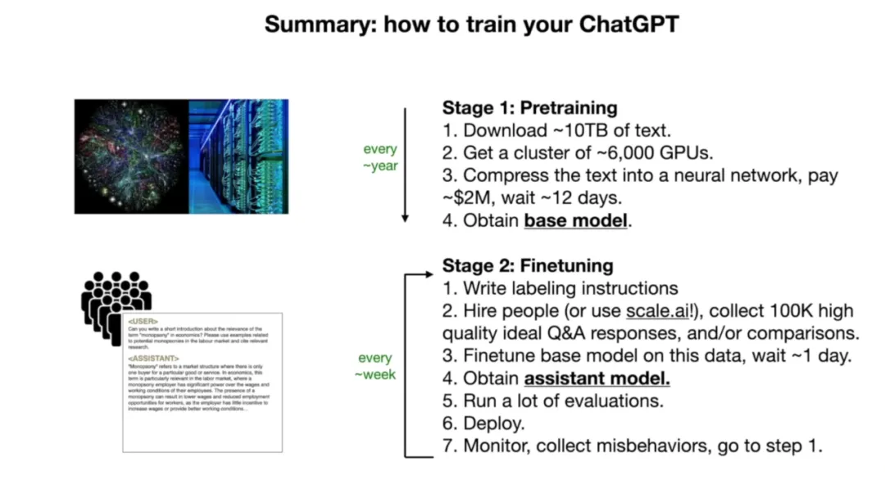
图片来源 A Busy Person’s Introduction to Large Language Models（https://www.openculture.com/2023/12/a-busy-persons-introduction-to-large-language-models-llms.html）
微调阶段 - 比较
对于每个问题，人工标注者都会比较辅助模型的多个答案，并标注出最佳答案。这一步骤称为从人类反馈中强化学习（RLHF）。
模型性能提升
1）模型越大，能力越强：
**参数量：**模型的规模通常与其参数量成正比。参数是模型学习到的知识的载体，参数越多，模型能够捕捉的信息和模式就越丰富，从而能够处理更复杂的任务。
**学习能力：**大模型通常拥有更强的学习能力。它们能够从大量数据中学习到更深层次的特征和规律，这使得它们在诸如自然语言处理、图像识别等任务上表现更佳。
**泛化能力：**大模型往往有更好的泛化能力，即在面对未见过的数据时，也能做出准确的预测和判断。
2）工具越多，能力越强：
**功能扩展：**为AI模型提供各种工具，可以使其功能得到显著扩展。例如，集成搜索引擎可以让模型访问互联网信息，增强其回答问题的能力。
**多任务处理：**工具的集成使得AI模型能够同时处理多种任务。例如，集成计算器功能可以让模型执行数学计算，集成编程接口则可以让模型编写代码。
**灵活性和适应性：**拥有多种工具的AI模型更加灵活和适应性强，能够根据任务需求快速调整其行为和策略。类似于人类通过使用工具解决各种任务。
面临的问题
幻觉
幻觉问题指的是大模型在生成文本时可能会产生与现实世界事实不一致的内容。这种现象可以分为几种类型:
**1. 事实性幻觉（Factuality Hallucination）：**模型生成的内容与可验证的现实世界事实不一致。大模型可能生成听起来合理但实际上错误的信息，例如，生成一篇关于一个不存在的历史事件的文章，模型可能生成一篇关于“拿破仑在月球上宣布法国胜利”的文章，尽管这在现实中从未发生过。
**2. 忠实性幻觉（Faithfulness Hallucination）：**模型生成的内容与用户的指令或上下文不一致。例如在一个关于健康饮食的讨论中，模型可能突然开始讨论健身运动，尽管这与用户的问题不直接相关。
产生幻觉的原因可能包括：
- 使用的数据集存在错误信息或偏见。
- 模型过度依赖训练数据中的模式，可能导致错误的关联。
- 预训练阶段的架构缺陷，如基于前一个token预测下一个token的方式可能阻碍模型捕获复杂的上下文关系。
- 对齐阶段的能力错位，即模型的内在能力与标注数据中描述的功能之间可能存在错位。
为了缓解幻觉问题，研究者们提出了多种方法，如改进预训练策略、数据清理以消除偏见、知识编辑、检索增强生成（RAG）等。
安全性问题
安全性问题涉及大模型可能遭受的恶意攻击和滥用，以及它们对用户隐私和数据安全的潜在威胁:
1. 对抗样本攻击：攻击者可能构造特殊的输入样本，导致模型做出错误的预测。
2. 后门攻击：在模型中植入后门，使得在特定触发条件下模型表现出异常行为。
3. 成员推断攻击：攻击者尝试推断出训练集中是否包含特定的数据点。
4. 模型窃取：通过查询模型来复制其功能，侵犯模型版权。
5. 数据隐私泄露：模型可能泄露训练数据中的敏感信息。
为了提高大模型的安全性，业界和研究界正在探索多种安全防护策略，包括：
- 加强数据的采集和清洗过程，确保数据质量和安全性。
- 对模型进行加固，提高其抗攻击能力。
- 采用加密存储和差分隐私技术来保护数据隐私。
- 增强模型的可解释性，以便更好地理解和控制模型行为。
相关技术
Prompt Engineering (提示词工程)
Prompt Engineering 是什么
提示词(prompt)是人与大模型交互的重要媒介。因此，对提示词的掌握、使用、研究，便具有非常重大的意义。从人机交互出发，将大模型视为一种特殊的、很强大的计算设备，那么，提示词之于我们：“prompt是一种新型的自然用户界面”。
大多数的prompt具有以下的形式：由「指令」(instruction)和「内容」(content)两部分构成。其中，指令部分为我们需要大模型做的事，如“判断下列句子的情感”，而内容则为真正的句子，如“我今天很高兴”。注意，并不是所有的prompt都必须是这样的形式，如比较简短的prompt：“中国的首都在哪里”、“模仿百年孤独的开头写一段话”等这种言简意赅的prompt就只有指令、内容为空。
Prompt的不同分类
Prompt千变万化、不可名状，其主要由以下几种常见形式构成：
-
**Zero-shot prompt：**零样本的prompt。此为最常见的使用形式。之所以叫zero-shot，是因为我们直接用大模型做任务而不给其参考示例。这也被视为评测大模型能力的重要场景之一。
-
**Few-shot prompt：**与zero-shot相对，在与大模型交互时，在prompt中给出少量示例。
-
**Role prompt：**与大模型玩“角色扮演”游戏。让大模想象自己是某方面专家、因而获得更好的任务效果。
-
**Instruction prompt：**指令形式的prompt。
-
**Chain-of-thought prompt：**常见于推理任务中，通过让大模型“Let’s think step by step”来逐步解决较难的推理问题。
-
**Multimodal prompt：**多模态prompt。顾名思义，输入不再是单一模态的prompt，而是包含了众多模态的信息。如同时输入文本和图像与多模态大模型进行交互，现在的4o就能做到。
Prompt技巧（后续章节详解）
Prompt或许并不是人类与大模型进行交互的唯一和最好的方式，但一定是当下使用最多的方式。
RAG（Retrieval-Augmented Generation）
什么是RAG
RAG（Retrieval-Augmented Generation）技术是一种结合检索和生成的方法，用于提升大语言模型（LLM）在知识密集型任务中的性能。通过一个两阶段的过程提升LLMs的输出质量：
-
检索（Retrieval）阶段，可以从各种数据源检索相关信息；
-
生成（Generation）阶段，将检索到的文档与原始查询，形成提示模板，一起输入到生成模型中，产生最终的回答。
这种方法使模型拥有了利用实时和外部的知识库（非训练时使用的数据）的能力，提高了其在特定问题处理上的灵活性和准确性。
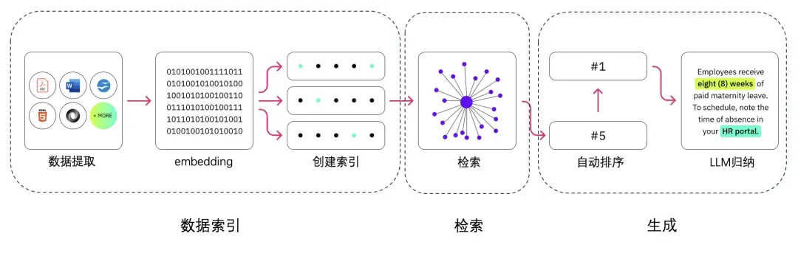
RAG解决了什么问题
大型语言模型（LLM）虽然在多个领域展现出了卓越的性能，但在实际业务场景中仍面临一些挑战：
-
**知识的局限性：**LLM的知识仅限于其训练数据，对于实时性、非公开或离线数据的获取存在困难。
-
**幻觉问题：**基于概率的输出可能导致模型生成不准确的信息。
-
**数据安全性：**企业对于数据泄露风险的担忧限制了对第三方平台的依赖。
为了解决这些问题，RAG作为一套有效的解决方案应运而生。
RAG工作原理
分为三个部分：索引、检索、生成。
**1. 索引 Indexing：**处理外部知识源，将知识源分割为chunk，编码为向量，存储在向量数据库 Vetor-DataBase 中。
2. 检索 Retrieval: 接受用户问题，将问题编码为向量，用这些向量去向量数据库中找到最相关的文档库 top-k chunks。
3. 生成 Generation: 将检索到的文档与原始问题一起作为提示 （Promot）输入到LLM中，生成回答。
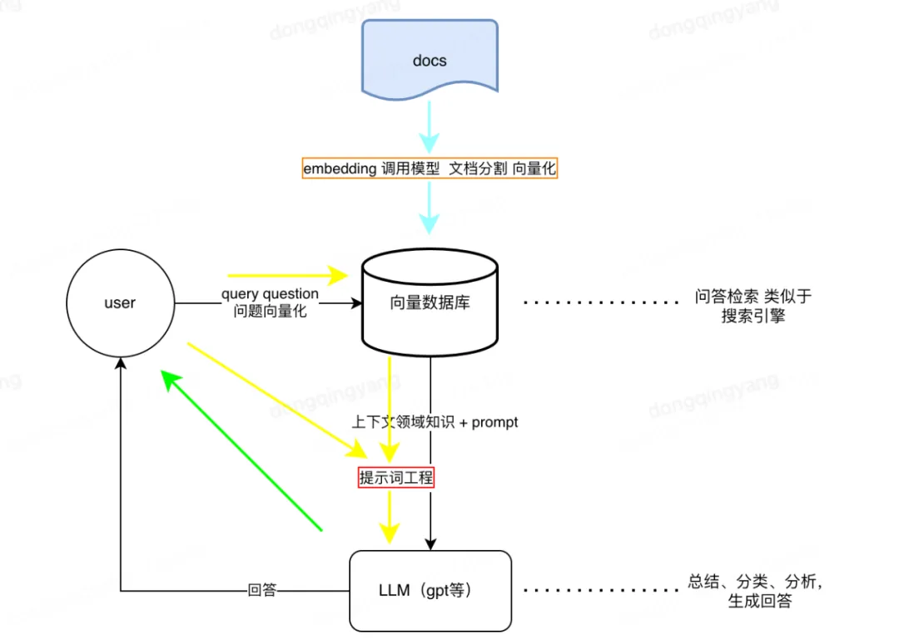
RAG的优势
-
**知识丰富：**RAG能够访问和利用大量的外部知识，提供更全面的回答。
-
**上下文相关性：**通过检索到的信息，RAG能够生成与用户查询高度相关的响应。
-
**灵活性：**适用于问答系统、内容创作等多种应用场景。
-
**减少幻觉：**结合实际数据，降低生成错误信息的风险。
RAG 的应用场景
-
**问答系统：**RAG可以用于问答系统，其中检索模型可以根据用户的问题从大规模的文本数据库或者互联网中检索相关答案，生成模型则可以将检索到的信息转化为自然语言的回答。
-
**文本摘要：**RAG可以用于文本摘要任务，其中检索模型可以检索与原文相关的摘要信息，生成模型则可以基于检索到的信息生成更准确和完整的摘要。
-
**对话系统：**RAG可以应用于对话系统，其中检索模型可以检索与对话历史相关的信息，生成模型则可以基于检索到的信息生成更连贯和准确的回复。
-
**事实核查：**RAG 可以帮助识别和生成基于证据的解释，以验证陈述的真实性。
-
**内容推荐：**在推荐系统中，RAG 可以根据用户的历史行为和偏好，检索并生成个性化的内容推荐。
RAG 是一种强大的技术，但它也有一些局限性，比如对检索系统性能的依赖，以及可能生成的答案质量受限于检索到的文档片段的质量。随着技术的进步，RAG 及其变体在处理复杂的认知任务方面展现出了巨大的潜力。
Agent智能体
为什么出现LLM Agent
近年来，人工智能（AI）和自然语言处理（NLP）技术迅猛发展，特别是大型语言模型（LLM）的出现，如 OpenAI 的 GPT 系列。这些模型展示了在各种任务中的卓越表现，从文本生成到对话系统。然而，尽管 LLM 拥有强大的处理和理解能力，它们的应用仍然需要进一步的优化和具体化。LLM Agent 的出现正是为了解决这些需求，实现更灵活、更智能的自动化任务处理。
**1. 复杂任务需求：**传统的 AI 系统在处理复杂任务时往往需要大量的领域知识和手工调试。LLM Agent 通过预训练模型和少量的微调，可以更好地适应各种复杂任务。
**2. 人机交互提升：**随着用户对于智能助手和对话系统的需求不断增加，LLM Agent 可以提供更自然、更流畅的交互体验。
**3. 自动化和效率：**在企业和个人生活中，自动化任务需求逐渐增加。LLM Agent 能够通过自然语言指令执行多种任务，提升效率。
LLM Agent是什么
简单来说，LLM Agent是基于大型语言模型（如GPT-4）开发的智能代理。它不仅能理解和生成自然语言，还能执行一系列复杂的任务，如回答问题、生成文本、进行对话等。想象一下，你的计算机能够像人类一样理解你的问题并提供有用的答案。
LLM充当 Agent 大脑的角色，并由几个关键组件组成：规划（Planning）、记忆（Memory）、工具（Tool Use)
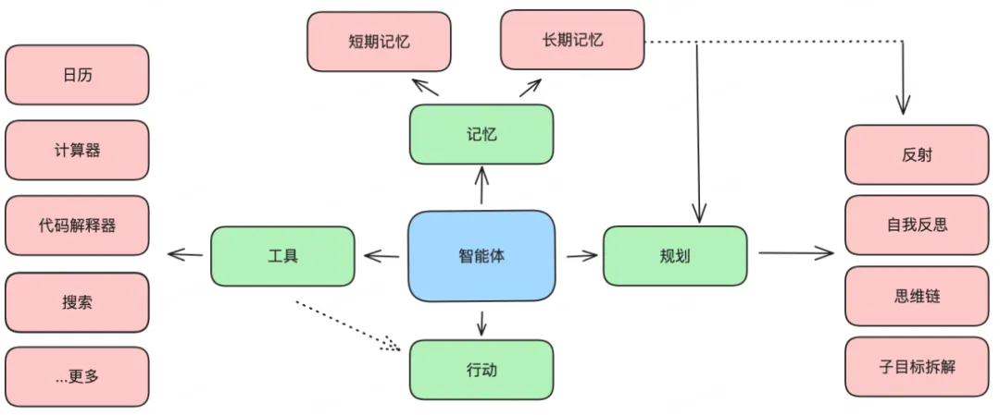
-
规划
- **子目标拆解：**复杂任务不是一次性就能解决的，需要拆分成多个并行或串行的子任务来进行求解，任务规划的目标是找到一条最优的、能够解决问题的路线。
- **反思和完善：**智能体可以对过去的行为进行自我批评和自我反思，从错误中吸取教训，并针对未来的步骤进行完善，从而提高最终结果的质量。
-
记忆
- **短期记忆：**所有的上下文学习（提示词工程）都是利用模型的短期记忆来学习。
- **长期记忆：**为 Agent 提供了长时间保留和回忆（无限）信息的能力，通常是通过利用外部向量存储和快速检索。
-
工具
- 调用外部 API 来获取模型权重中缺失的额外信息（通常在预训练后很难更改），包括当前信息、代码执行能力、对专有信息源的访问等。
LLM Agent 的优势
-
**高效性：**LLM Agent 可以快速理解和处理自然语言指令，减少了任务处理的时间和复杂度。
-
**灵活性：**通过少量的微调，LLM Agent 可以适应不同的应用场景，从而具有很高的灵活性。
-
**用户体验提升：**得益于强大的自然语言处理能力，LLM Agent 能够提供更加自然和智能的交互体验，提升用户满意度。
-
**可扩展性：**LLM Agent 可以不断学习和扩展新的功能和知识，使得它在长期使用中表现越来越好。
LLM Agent 的应用
-
**自动化客服：**LLM Agent可以提供24/7的客户服务，自动回答用户的查询，提高服务效率和用户满意度。
-
**内容创作：**从博客文章到营销文案，LLM Agent可以帮助内容创作者生成初稿或提供写作灵感。
-
**数据分析与摘要：**LLM Agent可以从大量文本数据中提取关键信息，生成报告摘要，帮助决策者快速获取信息。
-
**教育和培训：**在教育领域，LLM Agent可以提供个性化的学习材料，辅助语言学习，或者作为智能辅导员。
-
**研究助手：**对于研究人员，LLM Agent可以帮助文献搜索、信息整理，甚至参与创造性的研究过程。
多模态
多模态定义
什么是多模态呢？简单来说，多模态就像是一个多才多艺的艺术家，能够同时使用多种艺术形式来创作作品。在AI领域，多模态模型能够同时处理和理解多种类型的数据，比如文字、图像、声音和视频。
为什么需要多模态
为什么我们需要能够处理多种数据类型的AI模型呢？原因很简单：我们的世界是多模态的。我们交流和感知世界不仅仅通过语言，还包括视觉、听觉等多种方式。多模态模型能够更全面地理解和模拟人类的交流和感知方式，使得AI能够更自然地与人类互动。
多模态的作用和特点
多模态模型就像是我们的大脑，能够同时处理和理解来自眼睛（视觉信息）、耳朵（听觉信息）和其他感官的数据。作用主要体现在以下几个方面：
-
**信息整合：**能够将不同类型的信息整合在一起，提高理解和分析的准确性。
-
**增强表现力：**通过结合多种数据源，模型可以表现出更强的感知和认知能力。
-
**提高鲁棒性：**多模态模型可以在某种类型数据缺失或不完整的情况下，依靠其他数据类型来弥补，从而提高整体性能。
与单一模态的模型相比，多模态模型具有以下特点：
-
**源数据处理：**能够同时处理图像、文字、声音等多种数据类型。
-
**更强的泛化能力：**在不同的应用场景下表现更好，因为它们能够整合更多的信息。
多模态模型的应用案例
多模态模型在很多领域有着广泛的应用。以下是几个典型的例子：
-
**医疗诊断：**通过结合病人的影像数据（如X光片）、文字数据（病历）和生理数据（心电图），多模态模型可以提供更准确的诊断结果。
-
**自动驾驶：**多模态模型可以结合摄像头图像、雷达数据和GPS信息，帮助自动驾驶汽车更好地理解周围环境，提高安全性。
-
**智能客服：**通过整合语音识别、自然语言处理和情感分析，多模态模型可以提供更自然、更人性化的客服服务。
多模态大模型是人工智能领域的重要进展，它们通过整合多种类型的数据，显著提升了模型的表现力和鲁棒性。这不仅使得人工智能系统能够更好地理解复杂的现实世界，也为未来的技术发展带来了无限可能。无论是在医疗、交通还是日常生活中，多模态大模型正逐步改变我们的生活方式。
应用实例
斯坦福小镇
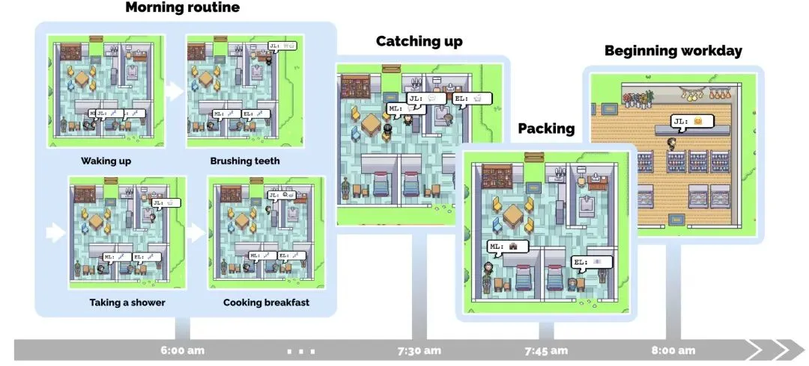
图片来源 Generative Agents（https://arxiv.org/pdf/2304.03442v1）
文生图、图生图、图生视频
LLM OS
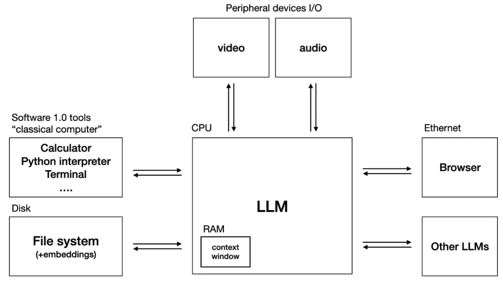
图片来源 The LLM OS（https://medium.com/@marcelheinz/the-llm-os-a-glimpse-into-the-future-of-tech-with-andrej-karpathy-3bcbc0baf339）
上古卷轴破解
（图片来源 https://scrollprize.org/firstletters）
未来
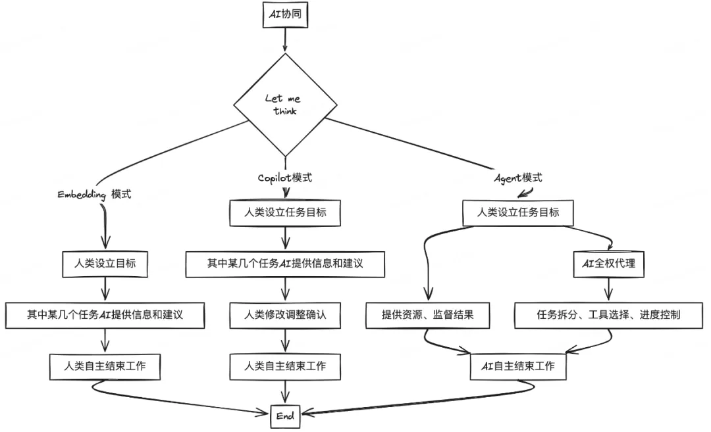
随着AI技术的不断发现和进步，AI与人类的协同关系将不断演进和深化。我们期待着在未来，AI能够成为我们最得力的助手和伙伴，共同迎接更加智能和高效的未来。我们可以预见以下几个趋势：
-
**更高的自主性：**AI将逐步从辅助工具发展为能够独立完成复杂任务的智能代理。这将解放人类的生产力，使我们能够专注于更具创造性和战略性的工作。
-
**更紧密的协同：**AI与人类的协同方式将更加多样化和灵活化。通过改进人机交互界面和协同算法，AI将能够更好地理解人类的意图和需求，实现更高效的合作。
-
**广泛的应用场景：**AI技术将渗透到各行各业，从医疗、教育到金融、制造业，AI将成为推动行业变革的重要力量。特别是在Agent模式下，AI将能够在更多领域中自主完成任务，带来前所未有的效率提升和创新机会。
跟着ChatGPT4o学全栈，我看到未来“学习”的模样
原文：https://mp.weixin.qq.com/s/C_WqLWiAkY7N9VXEMrukcA
工具的作用是至关重要的。在没有马镫的时候，古代人骑马是一桩苦差事，因为当马飞奔或腾跃时，骑手坐在马鞍上，两脚悬空，只好双腿夹紧马身：同时用手紧紧地抓住马鬃才能防止从马上摔下来。
马镫发明以后，使战马更容易驾驭，使人与马连接为一体，使骑在马背上的人解放了双手，骑兵们可以在飞驰的战马上且骑且射，也可以在马背上左右大幅度摆动，完成左劈右砍的军事动作。
马镫是人类历史上一项具有划时代意义的发明。正如英国科技史学家怀特指出的：“很少有发明像马镫那样简单，而又很少有发明具有如此重大的历史意义。马镫把畜力应用在短兵相接之中，让骑兵与马结为一体”。
在今天，我认为**大模型在生产力和学习上都会带来深刻的变革****，尤其是在学习方面。**接下来，我以一个用GPT4o学习全栈的例子来阐述一下大模型对学习的影响，以及对于未来学习的思考。
学习过程
我开始设定一个目标，即期望在一天内搭建一个前端项目，理解其核心代码，并实现一个需求变更。
PS：这部分省略，看原文吧。
大模型为学习注入新的可能性
在讨论之前，我们先了解下学习过程
学习是一个复杂而多阶段的过程，每个阶段都有其独特的特点和目标。我们可以将学习过程分为以下几个阶段：
1.**接触（Exposure）：**学习的起点。首先，我们需要注意新的信息、知识或技能，并对其产生兴趣。
2.**收集（Gathering）：**系统地广泛地获取更多相关的信息和资源，以便更全面地理解新知识或技能。
3.**理解（Understanding）：**指将所收集的信息进行消化、分析和综合，以便形成对新知识或技能的全面认识。
4.**记忆（Memorization）：**涉及将理解的知识或技能存储在长期记忆中，以便将来可以方便地检索和应用。知识的理解程度对记忆的影响非常大。
5.**应用（Application）：**指将所学的知识或技能在实际情境中加以运用，以解决问题或完成任务。
6.**反馈（Feedback）：**根据应用的结果和他人的评价，反思和改进学习方法和策略。
失败的学习随处可见
众所周知，学习过程中最耗费精力的是收集资料。寻找资料源、筛选高质量资料、系统化组织资料，这些任务不仅耗时费力，而且结果往往不尽如人意。
在理解知识的过程中，我们需要大量的阅读、训练和思考。由于缺乏系统指导，学习者常常感到困惑和迷茫。
长周期的学习需要及时反馈。比如，学习一门新的编程语言，从基本语法开始逐步掌握，可能需要一到两个月才能开始实际操作项目。这么长的学习周期可能让我们失去目标感，增加中途放弃的风险，最终可能感到挫败。
在学习过程中，缺乏足够的动力、信息过载、容易陷入单调重复、缺乏实践应用场景、反馈时间过长或无法得到反馈等都是障碍。这些问题都可能导致人们放弃学习。因此，我们常常看到失败的学习案例，而成功有效的学习案例则寥寥无几。
大模型让学习更容易成功
通过上述演示，我们可以看到大型模型在各个学习环节中都能提供巨大的帮助，甚至在某些方面产生颠覆性的影响，这些影响能够提高学习成功的几率。在资源收集方面，传统的模式（主要是搜索）需要在许多来源中收集。
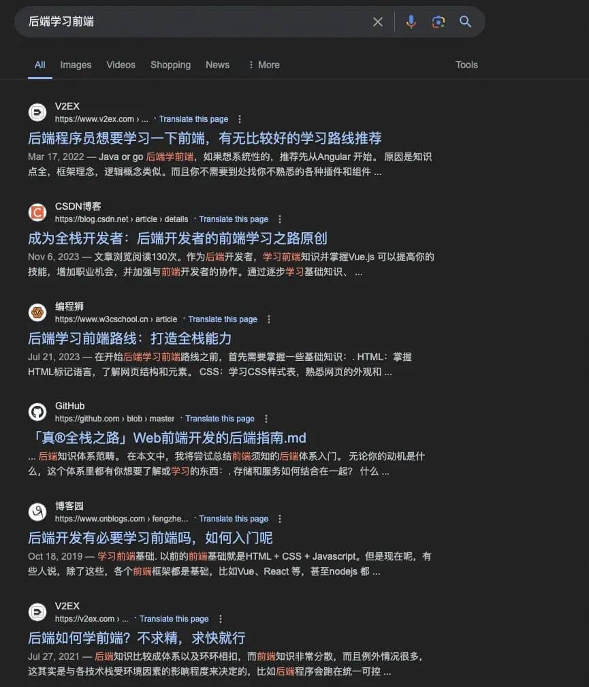
在此基础上还需要进一步做筛选和判断，这将消耗大量的精力。
然而，大模型在资源收集上有两个优势：
- **高度整合的知识：**大模型拥有大量的高质量知识，尤其在编程方面；
- **按需定制：**大模型可以根据个人水平实现定制化的教学课程；
当然，GPT在这里也有一些限制：
- **知识更新不及时：**通用的大模型不会使用未经验证的知识进行训练，虽然如此，但目前大模型的知识水平已经足够应对大部分的学习需求了。
- **知识缺乏系统化：**大型模型就像一只具有优秀记忆力的鹦鹉，它本身并未形成系统化的知识，需要借助prompt（像本文中学习前端的例子）或agent来实现结构化和系统化。
我们都知道，理解是形成长期记忆的关键，而通过知识的类比和迁移来理解新知识是一种有效的方法。
然而，建立类比和迁移这座连接新旧知识的桥梁并不容易。这不仅需要学习者理解新的概念，还需要将这些概念与已有的知识结构相结合，以便在新的情境中使用。如果对新概念理解不足，或者旧知识基础薄弱，就无法建立这种联系。
**大型模型在我们理解知识的过程中带来了新的启示，它具备非常强的知识类比能力。**大模型以Java工程师的角度解释了如何理解React组件生命周期。它通过类比Java类的生命周期来讲解React组件，这个方法非常有效。我相信只有既熟悉前端又熟悉后端的人才能如此解释，而GPT的回答如此自然。
同样，当我们尝试用类比（如将state与Java的成员变量进行比较）来理解新知识时，它会给我们提供更丰富的建议，更深入的解释，以及更多样的案例。
反馈对于学习的重要性，毋庸再言。在这一阶段，大模型同样展现出强大的能力。
- **实时反馈：**大型模型能够提供即时反馈，让学习者在学习过程中随时了解自己的表现。例如，当我们完成一段代码或者一个功能时，大型模型可以立即进行审查并提供改进建议。这并不止是效率的提升，更重要的是，它可能会引发更深层的变革。
学习是反人性的，人类也并不擅长学习，重要的原因是学习过程充满未知，可预期性差。尽管人类天生好奇，但遗憾的是这种好奇心并不能维持很长时间。聪明的教育者会运用各种技巧来提升学习的可预期性（更明确的奖赏），以尽可能地延长好奇心的持续时间。
提升反馈效率不仅表面上会提升效率，同时也会提升学习的可预期性，可能大模型会使学习这件事情不那么反人性。
- **多样化的案例：**大模型能够提供多种多样的案例，甚至我们可以用大模型创造案例；
面向未来
既然模型“全知全能”，我们还要不要学习知识？
答案是肯定的：我们仍然需要学习知识。
多年前就有人提出了一个类似的问题：“在现代社会，为什么我们需要记忆呢？我们可以在几秒钟内通过互联网查找到任何需要的事实性信息。”这并不是大数据模型时代特有的问题。我认为，我们仍然需要学习，并应该利用大数据模型来加速学习进程。
首先，**知识是思考的基础，没有知识就无法谈论分析能力或批判性思维等高级能力。**许多人认为思考过程类似于计算器的功能，计算器具有一系列的函数（如加法、乘法等），这些函数可以应用于任何数据。它的数据和函数是完全分开的。因此，一旦学习了新的函数，就可以处理所有的数字。
然而，人类的思考方式并非如此，至少对大多数人来说，功能（模型）和数据是无法完全分离的。例如，我们能够批判性地思考欧洲地缘政治如何导致第二次世界大战，并不意味着我们也能批判性地思考中东当前的局势。再比如，我们知道在使用金字塔模型进行分类时，应确保每个分类之间既无重叠也无遗漏。然而，即使我们在某个领域成功实现了这一点，但在仅仅理解模型的情况下，并不能保证在另一个领域也能做到无重无漏。
其次，**通过知识的学习，可以提高我们的记忆力。**我们把人脑分成工作记忆和长期记忆，**工作记忆的空间是有限的，它的上限决定了我们的推理能力。**这一点其实也很容易理解，当我们涉足到非常专业的领域时，会遇到大量的专有名词。例如，在营销运营领域，我们会遇到像“招选搭投”、“盘货池”这样的专有名词。这些名词都包含大量的背景知识。如果我们不清楚这些知识，我们根本是无法讨论问题（判断、推理、分析、决策等）的。
让我们想象一下，在不熟悉背景知识的情况下，我们如何探讨“直接将盘货池暴露给搭建页面是否合理？”时，首先，我要解释一下什么是盘货池，它是根据特定的商品指标规则圈选的商品集合。然后，我会介绍什么是搭建，在这一通输出之后，估计大家的脑子已经炸了。可是，我们还没有开始讨论真正有意义的内容。
发散一下：这种情况是不是跟当今的大模型所遇到的困境非常像？
实际上，我们可以通过学习知识来解决这个问题。我们可以将知识压缩成一小块一小块，然后存入长期记忆中。当我们需要时，可以随时调取。例如，当我提到"盘货池"这个概念，我们的脑海中立刻会想到"按指标圈选的商品集合"。而且，我们还可以联想到更多，例如它的存储形式，它在数据流向中的位置等等。我们能联想到的内容完全取决于我们的大脑中存储了多少信息。这样，**我们就大大节省了工作记忆空间，从而变相地突破了工作记忆空间的限制。**另外，学习知识还能更容易地触发长期记忆，也就是说，学得越多，记忆力越好。由于篇幅原因，我就不再详细说明这一点了。
在大模型时代，要怎么学习？
前面，花了大量的篇幅在论证，我们要不要学习，接下来，我们阐述一下，应该怎么学习。
与机器赛跑，仅仅靠技能型学习是不够的
模型最擅长的是什么？显然，大型模型在重复型技能学习方面表现出色。无论是对某种模式的判断，还是执行某些套路化的动作，模型都能高效而准确地完成。在这些领域，人类难以与大模型竞争。
令人沮丧的是，这些技能我们并不能抛弃，并且他们非常重要。就像篮球运动员必须具备扎实的基本功，才能完成复杂的动作一样，基本技能是我们掌握高级能力的基础。没有这些基本技能，任何高层次的应用和创新都无从谈起。
然而，在这个时代，仅仅依赖这些基本技能是不够的。面对“与机器赛跑”的挑战，我们需要培养更高等级的能力，如分析、判断、决策和创新。这些能力能够让我们在与大模型的竞争中脱颖而出。
未来也不全是坏事儿，值得高兴的是，在大模型的加持下，技能型学习过程将显著加快，从而提高这一阶段的学习效率。通过高度整合的、定制化的知识，提供多样化的案例，并及时给予学习者反馈，学习者可以更快地掌握基本技能。这不仅节省了大量的时间和精力，同时也使我们能够将更多的资源投入到更高层次的分析、判断和创新中，促进整体学习效果的提升。
要从技能型学习到专家型学习的转变
专家型学习这个概念不太容易定义，首先解释一下什么是专家能力，以帮助大家理解什么是专家型学习。
不要误解，此专家非彼专家。
首先，专家具备概念框架和分析能力。
当专家面对一个问题时，他们首先会运用概念框架来锚定问题的类型。例如，在处理一个需要在多个服务器之间共享数据的系统时，专家首先会锚定这是一个分布式问题，然后再进一步锚定是分布式当中数据一致性的问题，其后才会着手解决数据如何在不同节点之间实现一致。
其次，专家能够清晰地识别模式、关系和差异。
这一点或许有些抽象。专家不仅能应用概念模型，还能在复杂情境中看清楚各方关系和角色。比如，在设计复杂的软件系统时，专家能识别核心服务和辅助服务，理解它们如何协同工作，并优化接口和数据流。他们能预见扩展系统时的挑战，并提前设计解决方案。
再次，专家具备扎实的基础知识，并能够顺畅地提取和运用这些知识。
扎实的基础是专家型学习的基石。假设一个人连基本的概念都无法理解，就无法指望他能深入分析和解决问题。
那么，什么是专家型学习，或者换句话说，如何通过学习达到专家能力？
扎实的基础知识是专家型学习的第一步，这一步是可以通过系统的学习和反复练习来实现的。然而，令人沮丧的是，后续的高级能力——如分析能力、系统化思维、批判性思维、决策和创新等——并不能通过简单的学习获得。
这些高级能力需要大量实践来培养，我相信阿里的“借事修人”的理念，但是这首先需要我们“躬身入局”。具体来说，主动承担有挑战性的任务，尝试跨领域学习和应用，迫使自己运用高级能力；持续反思和总结经验，改进策略，不断输出，寻求反馈；这样才有可能将高级能力内化为自己的技能。
软实力从来没有变得像今天那么重要
在现今社会，许多技术性的任务可能被机器取代，但判断和决策仍然需要人来完成。因此，在可预见的未来，软实力（沟通能力、同理心、逆商、团队精神、领导力等）的重要性将变得更为突出，比以往任何时候都更为关键。
AI小白的大模型学习路径
通过了解chatGPT来理解什么是大模型
不得不说，是22年底chatGPT的发布让人工智能再次被得到广泛关注。chatGPT所有人都听过，最初我听到它只粗浅的知道它是一个对话工具，好像很厉害，对GPT的认知也以为只是一个简单的品牌代号，就跟AMG、BMW这种类似，没去想会有啥意思。但当后来认真了解了chatGPT每一个字母的详细释义之后，才发现原来人家取名并不是随便取的，在GPT命名的时候就已经告诉我们大模型的一些突出特点了。
chatGPT：
chat——会聊天的
G——generative，生成式
P——pre-trained，预训练
T——transformer，新型神经网络
会聊天的这个特点很显而易见，说明他是一个对话机器人，这没啥好说的。而后面的三个字母分别代表了这个机器人背后使用的三种关键技术。
首先讲“生成式”，顾名思义也很好理解，如果用过此类工具就知道它们的内容生成形式是一个字一个字吐出来的，不像以前用搜索，一股脑儿啪给你一段话或一堆信息。其实在这个吐字的过程中模型是在做逐字的推理：基于上下文，预测下一个可能的字的输出概率，而且通常会生成好几个可供选择的候选答案，最终只选择概率最高的那个输出给你。
举个例子就很好理解：生日蛋糕很——chatGPT——甜（0.2）、香（0.18）、大（0.15），最后给到你也就是“生日蛋糕很甜”。这里面可以看出推理的关键就是机器在根据概率来做选择性的输出。
再来看什么是“预训练”。在理解预训练之前，有必要先理解什么是训练。在《AI计算101》开篇中对训练和推理的过程做了非常通俗的介绍，从讲师的释义看，模型训练的过程简化起来就是：给机器一堆的x和y，通过一通操作，最终得出一个所谓最合适的w和b的过程，最终抽象成一个函数来表达。所谓推理就更好理解了，就是基于已知函数，输入x得到y的过程。
理解了训练，再理解预训练就比较容易了。预训练就是让机器自己学习大量的资料，学习的目标是如果让它参加高考，至少能考六七十分水平的过程。这里学的知识一般都是一些通用知识，比如chatGPT学的内容就包括维基百科、图书、杂志期刊、链接（高浏览网络内容）、网页内容、github代码这些。通过学习，让chatGPT这个机器开始了解人类世界。
如果再把过程简化一点，把模型的训练简单看做是一个输入输出过程的话，这个过程就是：通过一套程序，触发机器去“学习”这些知识，最后的输出是啥呢？我理解最后的输出就是一堆的函数集，以及函数背后的w和b，而这个w和b，就是所谓的参数。咱们都知道通义有Qwen7B、14B，GPT3的参数规模是175B，这些xx B就代表的是参数量，比如GPT3的175B，就代表这个模型有1750亿个参数。如果按照上面的理解，就是这个模型有很多的函数集，有1750亿个w和b。什么概念呢？据说下载一个LLaMa2的开源模型需要140G的内存空间。
这样就能理解，其实14B的模型掌握的基础知识要比7B多，或者可以理解为机器的脑容量更大，那肯定能力就更强。但在实际应用中，模型的选择往往要兼顾能力和性价比，所以这也就是为什么咱们家要开源这么多模型的原因。
还有一个因参数量的变化而带来的一个关键变化就是，模型会具备涌现能力。下面这个图想必能很直观的理解什么是涌现：随着参数量的不断增加，机器突然具备某些新的技能。（涌现这个词最早是个哲学术语，大家感兴趣的话可以去深入了解下，还是有几分浪漫主义色彩的。）
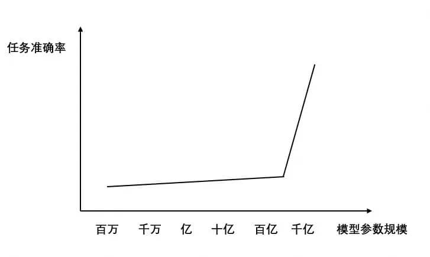
最后再来看看transformer。中文的释义是它是一种新型神经网络，干嘛用的呢？我的理解他就是机器学习或者是模型训练的一个算法框架。其实对我们这样的小白没必要做深入的研究，只要理解他是一个模型训练的工具或者方法就好了。上面讲到模型训练的过程，不是会给机器一堆的x和y，再通过一通操作，最终得出w和b吗，这里面的一通操作，我的理解就是transformer在发挥作用：机器在transformer的方法论指导下，做输入和输出。Transformer是当下比较主流的深度学习算法框架，由谷歌在2017年提出的，有意思的是紧接着在2018年openAI就基于transformer发布了GPT1。
理解了GPT的特征之后，理解其他大模型就可以举一反三了。
那如果把GPT比作一辆汽车的引擎的话，openAI是怎么组装chatGPT这个产品的？模型从预训练结束到能被商业化的使用，中间还需要经历哪些环节，这些环节的背后又需要投入多少硬件、时间和人力资源呢？
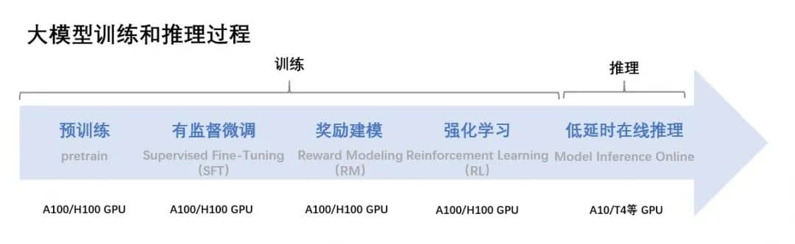
这张图其实比较清晰的把模型训练的过程以及所需要的资源都做了直观的归纳，能够看到模型训练的过程除了前期的预训练，还包括有监督的微调、奖励建模、强化学习，以及这些过程都需要底层硬件GPU来做支持。
我们分别来理解一下上面的这些专有名词。首先什么是SFT（Supervised Finetuning）有监督微调。按照我自己的理解，如果把模型训练完成的标志看成是高分通过高考的话，那从预训练完成到参加高考之前还需要有几次模拟考试，而SFT就是第一次的模拟考试。这场考试的特点就是，出卷老师人类会给出一批高质量的问答对（试题和标准答案），这些问题不来自预训练阶段前期学到的内容。机器首先根据问题来给出自己理解的答案，然后再比对是否接近人类给出的标准答案，并进而优化参数的过程。
那什么是RLHF（Reinforcement Learning by Human Feedback）人类反馈强化学习呢？这个过程区别于SFT就是让机器一次给出多个答案，人类对不同答案来打分，分数越高代表越接近符合人类想要的答案，最终让机器再次优化参数的过程。而奖励建模是强化学习过程日益成熟，人类发现这件事也可以交给机器去做，通过再训练一个新的强化学习模型，让机器去训练机器，同样通过让机器调整参数，直至让模型输出的结果越来越接近人类思维会给出的答案。
所以总体来看，整个模型训练的过程我自己概括一下就是：通过输入大量的人类知识，经过深度学习，输出一个函数集及函数背后的参数集，目标是让这些参数驱动的机器的回答更接近人类间对话的回答的过程。
说完了训练过程，再来看看训练所需要的硬件资源。从刚才这张图能看到，实现上述这些过程对计算机来说都需要A100 GPU作为底层计算硬件来支撑。那why GPU？在《AI计算101》里有两页片子很形象地解释了这一点。首先GPU在某种程度上可以理解是CPU的演进，原本它是专为处理图形计算而设计的芯片，最早应用的场景是在游戏等需要做大量图形计算的场景。到后面随着AI等场景的兴起，大家发现GPU的特点不仅适合处理图形计算，也适合用在处理大量、重复且简单的计算场景，而人工智能也是满足上述计算特点的场景之一。
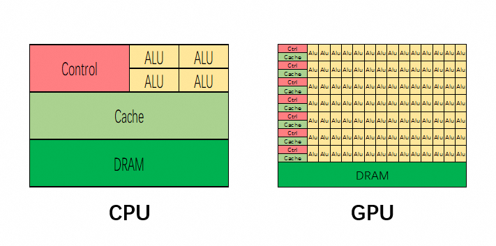
上面这张图从芯片设计的角度给出了解释。红色、绿色、黄色部分分别代表了芯片用于控制、缓存、计算的实际物理面积，可见GPU相较CPU显著的特点就是，计算单元多、逻辑简单（因为计算面积大、单元多，且控制区域小）。再回到大模型的训练过程，深度学习其实就是让机器做大量且重复的解方程的过程，这就是为什么GPU适合AI计算的原因。
在比较完GPU和CPU的差异后，再来看看不同GPU间又有什么差异？
上面说到，GPU为大模型训练全过程提供计算支持，而模型的参数越大，代表模型的能力越强。当AI时代来临，大型科技公司的目标就是能够以最快的速度，发布能力更强、参数量更大的大模型，这一点从open AI发布模型的路径就不难看出。
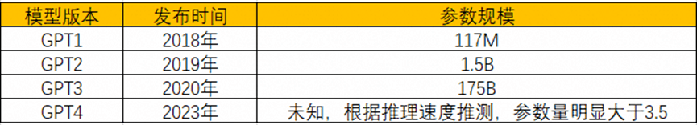
而目前市面上主流的国内外GPU芯片算力是多少呢？在FP16计算精度下，英伟达的A100和H100的计算性能是312TFLOPS和1000TFLOPS，而目前海光的最高性能的GPU深算2号K100的计算性能是100TFLOPS；目前国产GPU性能相对更好的应该是华为的昇腾910B，计算性能也只是280TFLOPS，所以这就是为什么英伟达的GPU会受到如此追捧的原因之一。
这里再补充解释下312TFLOPS是什么意思，这里可以拆分成三个部分来理解。FLOPS：Floating Point Operations Per Second（浮点运算次数）；T：Tera，计量单位，代表 (10^{12})（一万亿），所以312TFLOPS是代表一块GPU每秒能够进行312 万亿次浮点计算。除此之外对应的计量单位还有GFLOPS、TFLOPS、PFLOPS、EFLOPS，分别代表每秒能够执行10^{9}、10^{12}、10^{15}、10^{18}次浮点计算，分别用于衡量PC、HPC（高性能计算机）、超级计算机、最前沿超级计算机。
最后再来总结一下什么是大模型。按照我自己的理解，大模型就是基于已经被培训过的，具有很大参数量、知识储备丰富的，能够用人类思维来和人类进行直接对话的生成式问答机器。
大模型对未来生活和就业的影响，工具or失控？
最后两个部分我想跳脱出技术，聊聊普通老百姓可能会关心的问题。前段时间参加了一个有关大模型话题的报社读者与专家的交流会，会上被问到最多的两个问题就是：
1、当前AI快速发展，在未来AI会不会替代人类来工作 ，导致很多人会因此而失业；
2、AI未来会不会反向控制人类。
先来看下第一个问题。目前大模型主要以工具或新技术的方式被用来提效或释放人类精力或给人带来更好的使用体验。回溯历次工业革命的发展，人类始终都是朝着生产力的创新进而帮助人类提高生产效率的方向来利用机器、改变机器、制造机器。目前大模型也在朝着这些方向被应用，比如AIGC、搜索增强、chatBI等等。都是把原本需要人类付出更多时间才能完成的事情，通过机器来快速实现了。在未来对于一些相对简单、流程化程度比较高、事物属性比较强的工作来说，某种程度上确实可以先让机器来做前期预处理，人类只要做简单的微调和确认就可以。这中间势必可以释放掉一部分人的精力。
如果大家经常去全家，就会注意到以前全家需要2-3个店员来负责店铺收银，现在基本都是2-3台自助收银机器配套1个店员就能维持店铺的正常运转。所以对一部分人来说，失业是一定的，这个失业是因为科技的发展和环境的变化所导致的。甚至随着技术的进步，可能我们每个人都会面临失业的风险，因为在未来可能咱们所处的整个行业都会被全部颠覆掉，那公司也就不复存在了。司机这一职业就是很典型的随着科技的发展而不断演进和改变的案例，最早的司机是以马车夫的身份而存在、到现在的汽车驾驶员、再到随着自动驾驶技术的日渐成熟，未来的“司机”可能会是具有高度复杂算法和传感系统的自动驾驶车辆。
面对这种趋势，从大家的提问中就能看出对此的担忧，但我个人觉得也没有必要过度恐慌。首先社会未必会允许未来完全由机器来替代人类干某些事情，因为这背后毕竟事关就业和民生。另外，时代在发展、科技在发展，原地不动等于倒退，当然也会面临被淘汰的危险。这就启示我们需要做一些对新技术、新工具的学习，来适应未来的职业需要。
关于第二个问题，AI在未来会不会反向控制人类。这个话题在5年前的所谓大数据时代就被提出过。当时我在读吴军老师写的《智能时代》一书的时候，他就给出了自己的判断。他的观点是不会，他认为机器背后是由数据、算力、算法支撑起来的，而算法归根到底还是人设计的，所以他认为人不会被机器所控制，反而会被懂得制造智能机器的人所控制。
对吴军老师的观点我们可以不做评判，但也侧面反映了两点趋势。首先机器智能很厉害，一不小心就会有失控的风险，而且失控带来的结果是毁灭性的，就和霍金说的别让疯子使用核武器是一个道理。但机器归根结底还是可控的。但不知道吴军老师现在会不会改变自己的判断，因为大模型时代来临，机器变得愈发智能，就拿大模型举例，当训练的参数量无限增大，大模型在未来会不会涌现出人类无法控制的能力？这一点目前我们无从得知，但我们也需要防范人工智能获得独立的意志。至少说明这是一个需要引起足够重视的问题。
大模型产业会走向何方
最后一个部分我想谈谈围绕大模型我自己的一些判断，也是我最近在看完一些书和培训之后的一些思考。
先说现象，首先是国家层面开始重视人工智能，安老师帮我们总结成了三个第一次：第一次提出“通用人工智能”、第一次提出“产业智能化”、第一次提出“把握人工智能等新科技革命浪潮”。其次是资本对人工智能领域的投入，国内外对AI大模型公司的投资都非常积极踊跃，咱们公司也投资了很多的AI大模型公司。那是什么原因让通用人工智能在最近被全世界范围关注和重视呢？
从我的观察来看，如果把大模型仅仅看作是工具的话，是有可能成为下一次工业革命的导火索的，就跟蒸汽机、内燃机、计算机在历次工业革命中扮演的角色一样，可以作为引领整个产业升级的创造性的“引擎”。
而从历史经验看，谁能成功领导一次工业革命，谁就能主导接下来一段时间的全球经济。因为大模型带来的生产力的变革，可以从世界范围内改变全球的生产制造关系。对国家来说，大模型这个新的技术工具，可以被应用于千行百业，带动整个产业的下一次升级，也可以被出口到其他国家，带动国内经济的发展。
最后再谈一谈我对这个行业的判断。当前我们在AI大模型赛道看到的景象是一片欣欣向荣，咱们国家就有所谓的百模大战。国家鼓励，资本支持，科技公司也都投身其中。但是未来如果AI大模型真的能够在全球范围内建立影响力的话，最终的发展也应该是收敛的，就跟新能源、新能源汽车也从最开始的一哄而上到如今逐渐发展成寡头独大。
从历史经验看，每一次的工业革命浪潮最终也只是留下了几家家喻户晓的企业，第一次的东印度公司、第二次的福特和通用电气、第三次的英特尔、IBM、苹果，所以谁能脱颖而出，可以拭目以待。但值得庆幸的是，至少我们国家还在这一轮全球科技革命的牌桌上，作为当今智能化浪潮的弄潮儿，让我们一起期待大模型对人类生活的改变。